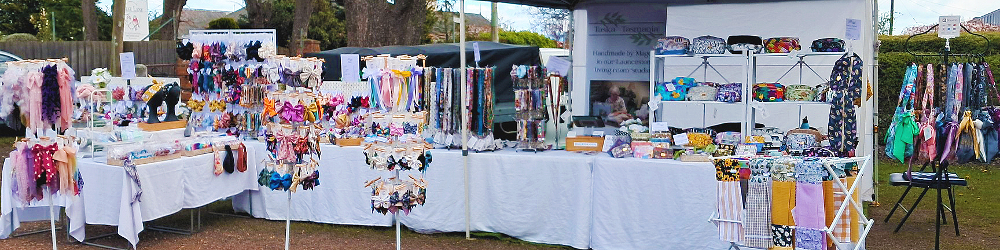

The Taska Tasmania Story
When Magda retired she realised that she was going to get very bored very quickly. She had a sewing machine which had seen little use because she couldn't find the time to sew, even though it was something she had always wanted to do.
Sewing became a bit of a passion ( “should have been doing this all my life” sort of thing ). A way of funding the hobby had to be found and Taska Tasmania was born. Initially the idea was to set up a table at one of the local craft markets and sell shopping bags.
Magda's heritage is Hungarian and that's where the name Taska Tasmania comes from. “ Taska” is “bag” in Hungarian.

Turned out people weren't keen on shopping bags and the stall had to diversify. That lead to **aprons** …. with off-cut material used for **scrunchies** …. **lanyards** …. and what started out as a single table in Dec 2021 became a **pop up shop** hosted by Evandale Sunday Market – with occasional excursions.
Everything Taska sells is **handmade by Magda** in what used to be our living room which has now graduated to being the **Taska workshop**. The hobby stall has grown into the craft popup shop we're immensely proud of.
The Tools of the Trade
Magda with her original Singer ( and sewing tables ), now long gone in favour of a **Brother machine** and other stuff.
Not Magda :)